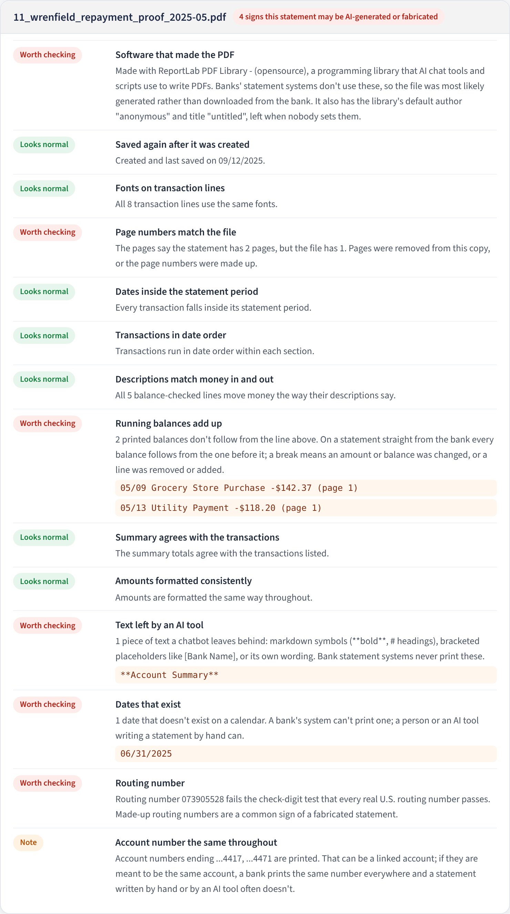

Quick Analysis Guide
Bank Statement Analyzer
A step-by-step method for analyzing bank statements in a fraud case, with a practice case and workpapers.
Justice for Fraud Victims Projectjusticeforfraudvictimsproject.org
Quick Analysis Guide
A step-by-step method for analyzing bank statements in a fraud case, with a practice case and workpapers.
The analyzer does the reading, the arithmetic and the first pass for red flags. The judgment is yours: deciding what matters, following it up, and saying only what the records support.
Work through eight steps, in order. Each fills one or two sheets of the workpaper template (Forensic_Workpaper_Template.xlsx, linked in the app's sidebar under Student materials). The sheet references are in brackets.
Write down the questions you were asked, and the limits of the work. [A-1]
List every document, where it came from, and each statement's SHA-256. [A-2]
Load the statements; confirm each one reconciles before you rely on it. [B-1]
Read the Document Check for each file: edited? AI-generated? [D-2]
Summarize money in and out by month, so the unusual stands out. [B-2]
Log every flag and follow each one up until it is explained or isn't. [D-1]
Follow each significant payment, and the cash, to where it arrived. [C-1, C-2, C-3]
Build the amount from the workpapers; write findings the records support. [E-1, F-1, R-1]
Before any analysis, know exactly what you have, where it came from, and what you were asked. [A-1, A-2]

Before you use a single number, show that the analyzer read each statement completely. [B-1]
| Result | What it means | What you do |
|---|---|---|
| Reconciled | The transactions read agree with the balances or totals the bank printed | Rely on the figures; record it on B-1 |
| Variance | They don't: a line was missed or misread, or the statement was altered | Compare the Transactions tab with the PDF line by line before going further |
| Needs Review | The statement doesn't print enough to check against | Prove it by hand on B-1 |

Fraud cases attract fake documents. Statements are edited to hide transactions, and now they are also written from scratch by AI tools. The Document Check tab looks for the traces of both. [D-2]
| Check | What a warning means |
|---|---|
| Software that made the PDF | Saved by a PDF editor or office program. Banks don't produce statements with these. |
| Saved again after it was created | The file was changed days or weeks after the bank issued it. |
| Fonts on transaction lines | A few lines are in a different font: typed over the original. |
| Dates inside the period / in date order | A line pasted in from another month, or moved. |
| Descriptions match money in and out | "Payment from" on money that went out: a relabelled payment. |
| Running balances / summary agree | An amount, balance or total was changed without the others. |
| Amounts formatted consistently | A figure typed by hand ($13763.86 among $1,234.56s). |
Ask an AI chat tool for "a bank statement showing these payments" and it will write one. Such files leave different traces, and two or more make the app report "may be AI-generated or fabricated".
| Check | What a warning means |
|---|---|
| Software that made the PDF | A programming library (ReportLab, FPDF, wkhtmltopdf and others): what AI tools and scripts use to write PDFs. |
| Text left by an AI tool | Markdown symbols like **Account Summary**, placeholders like [Bank Name], or chatbot wording. |
| Dates that exist | A date like 06/31 or February 30: a bank's system can't print one. |
| Routing number | The number fails the check digit that every real U.S. routing number passes. |
| Page numbers match the file | "Page 1 of 2" on a one-page file: pages missing, or made up. |
| Account number the same throughout | Different numbers in different places (a note: it can also be a linked account). |

The strongest test isn't in the file at all. Do the transactions appear on the other side? A claimed transfer to the victim should appear as a deposit on the victim's own statement. A payroll deposit should appear on the employer's statement. Record these on D-2 under "By hand".
A warning is a reason to get the statement directly from the bank, or by subpoena. A clean result does not prove a statement is genuine.
A sources and uses summary turns hundreds of transactions into one page a reader can follow. [B-2]

The Red Flags tab lists patterns investigators look for, most serious first. Each is a question to answer, not an answer. [D-1]
| Pattern | Questions to ask |
|---|---|
| New payee taking large sums | Who is it? Is there an agreement, invoices, a reason the payments started when they did? |
| Cash kept just under $10,000 | Who made the withdrawals? Where did the cash go? (Banks report cash over $10,000; staying under on purpose is called structuring.) |
| Money in and straight back out | Is the account a pass-through? Where did the money go next? |
| Balance drained; cash jumped | What changed at the start? Who had access? |
| Gambling, gift cards, cash advances | Does this match the account holder's habits and abilities (can they drive to the casino)? |
| Duplicate payments, check gaps, overdrafts | Were both payments authorized? Where are the missing checks? |

Tracing answers the question every client asks: where did the money go? It needs the receiving side's records, usually by subpoena. [C-1, C-2, C-3]
Upload the victim's statements and the recipient's statements together. The analyzer reads each bank's layout, reconciles each account, and looks for patterns across all of them: the same cash showing up as deposits, money arriving and leaving within days.
| Method | How to match it |
|---|---|
| Check | The check image: payee, endorsement on the back (which account it was deposited to), and the deposit on the recipient's statement one to three days earlier |
| Wire | The wire record: beneficiary, bank and account number, and the same amount arriving the same day |
| Zelle / transfers | The confirmation number or the sender's name, same day |
| Cash | Cash deposits in the subject's accounts a few days later, often a little less than withdrawn [C-3] |
For each payee, compare what was paid with what a document supports: an agreement's rate, invoices, receipts. The calculator on C-2 works out the most a caregiver could have earned under an hourly agreement.
Money that arrives in a business account and leaves within days for a personal account, a car dealer or a casino tells you what the business is for. Keep tracing until the money is spent or the records run out, and say where they ran out.
The Transactions tab's search box covers every statement loaded. Search a name ("Pruitt"), a reference number, or an amount.
Build the amount from the workpapers, one component at a time, and say what each rests on. [E-1, F-1, R-1]
| Write | Not |
|---|---|
| "The $24,000 wire was deposited to the LLC's account and $18,750 left the next day by check to a car dealer." | "Dana stole the money to buy a car." |
| "The statement is not consistent with the account holder's bank records, which show no such deposits." | "The statement is a forgery." |
| "The signatures on checks 2047 and 2048 differ from those on 2043 and 2044; a document examiner should compare them." | "The checks were forged." |
| "We could not trace $6,600 of ATM cash, cash advances and gift cards." | (Leaving it out) |
Findings say whether the records are consistent or not consistent with the explanations offered. Whether anyone intended fraud is for the trier of fact.
A complete fictional case: four banks, eleven statements and nine case documents, every page marked as a sample.
The story: Evelyn Hartwell, 81, hires a caregiver, Dana Pruitt, who bills through DP Companion Care LLC. In two months her account goes from about $16,000, plus a $50,000 CD, to overdrawn. Her daughter's lawyer engages you.
| Files | What they are |
|---|---|
| 1 to 4 | Evelyn's checking (March to May) and credit card (May), Larkspur Valley Bank |
| 5, 6 | The "family copy" of April that Dana gave the family; a scanned, redacted May (for OCR) |
| 7, 8 | DP Companion Care LLC's business checking, Quillbrook Credit Union (subpoenaed) |
| 9, 10 | Dana Pruitt's personal checking, Oxbow Prairie National Bank (subpoenaed) |
| 11 | The Wrenfield Trust Bank statement Dana's attorney sent as proof of repayment |
| Exhibits A-I | Engagement letter, interview notes, caregiver agreement, invoice, CD notice, account change letter, wire confirmation, check images, opposing counsel's letter |
In the app, Try the full case loads files 1 to 4 and 7 to 10; Try a doctored statement and Try an AI-generated statement load files 5 and 11 next to the real ones. Download everything with Hartwell case pack (.zip) under Student materials.
Save the app's workpaper (it carries the Evidence record and every transaction's source page and line) with your template workbook. For a real case, keep everything in an encrypted project and never upload real statements to a public demo.
Instructors: the answer key for the Hartwell case is demo/ANSWER_KEY.md in the app's download (it is not in the case pack).